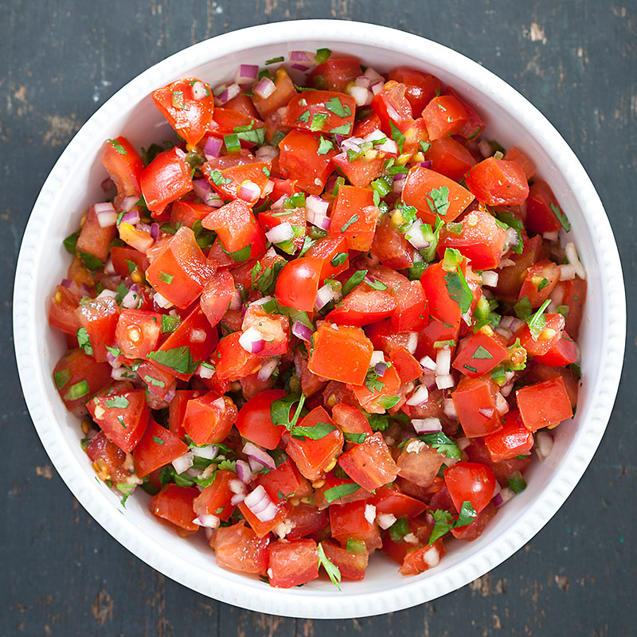

Fresh Tomato Salsa

Description
A fresh tomato salsa that goes great with your favorite chips. It gets even better as the flavors meld.
Prep: 20 mins
Total: 20 mins
Serving: 40
Yield: 5 cups
Per Serving: 5 calories; protein 0.2g; carbohydrates 1.1g; sodium 25.1mg
Ingredients
- 3 cups chopped tomatoes
- 1 cup onion, diced
- 1/2 chopped green bell pepper
- 1/4 cup minced fresh cilantro
- 2 tablespoons fresh lime juice
- 4 teaspoons chopped fresh jalapeno pepper (including seeds)
- 1/2 teaspoon ground cumin
- 1/2 teaspoon kosher salt
- 1/2 teaspoon ground black pepper
Steps
- Stir together tomatoes, onion, green bell pepper, cilantro, lime juice, jalapeno pepper, cumin, salt, and
pepper in a bowl.
Back